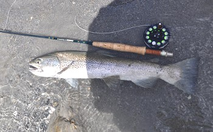
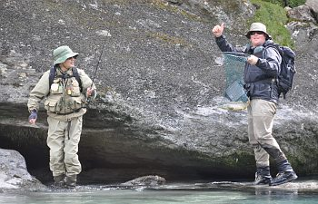
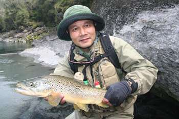

釣行日誌 ＮＺ編 「翡翠、黄金、そして銀塊」
鰐部さんのロングキャスト
2010/11/23(TUE)-4
いよいよ鰐部さんがキャストを始める。第一投、距離が足らない。第二投、フライの落ちた場所が遠い。第三投、落ちたフライにドラッグが掛かる。それから幾度か試みた後、毛針がどんぴしゃの位置に落ちて流下を始める。16番のロイヤルウルフに気づいた鱒が、ゆっくりと鼻面を反転させて動き始め、疑うことなくゆっくりと口を開けてフライに食い付いた。１、２、そして３。見事な合わせが決まり、鱒が深みへと反転して潜ってゆく。いよいよファイトの始まりだ。さぁカメラカメラと慌ててデジカメを取り出し、動画の撮影に入る。と、どうしたことか鱒はまだファイトを始めたばかりなのに水面に浮き上がってぐったりと横たわり、カツに引かれるままになっている。あれぇ？ 何が起こったんだ？
「おーい！ そいつは心臓発作を起こしたようだぞ！」
ディーンが冗談を叫ぶ。そんな鱒をしばらくディーンと見とれていたが、どうやらティペットが身体に巻き付いていたらしく、40秒ほどなすがままになっていた鱒はぐるりと反転すると、元通り泳ぎだして抵抗を始めた。カツはすかさずリーリングを始め、鱒をあやしている。さすがの大物鱒も、水際まで寄せられては歴戦の強者の鰐部さんにかなうはずもなく、砂地の岸辺でしっぽを掴まれた。
「やったーっ」
「おめでとう！」「完璧だったよ！」
ディーンと二人、精一杯の大声で対岸のカツへお祝いを叫んだ。

鰐部さんはまた対岸を探り始め、あたりには渡れそうな浅瀬が無かったため、そのまま二人と一人に別れて釣り上がることとなった。カツがロングキャストでの１尾を釣った大淵のやや上流にある流れ込みで、ディーンがまた鱒を見つけた。流れ込みの主流の真ん中に定位している。今度は水面近くを意識しているようなので、迷わずロイヤルウルフ12番を結ぶ。魚はしっかり見えているので、落ち着いてキャストする。三投目でキャストが決まり、狙った筋をフライが流れ始める。すると、水面に浮上してきたブラウンは、鼻先にフライが当たりそうなほど近づいてから、一度、二度、三度とフライの回りを回遊し、四度目でぱっくり食い付いた。これとまったく同じシチュエーションが1999年のウェストランド釣行で、ブリントさんと湖の流れ込みを釣った時にもあった。あの時は鱒の動きに気を取られてラインのストリッピングがおろそかになり、合わせが決まらなかったのだが、今回はしっかり余分なラインをたぐり寄せていたのでばっちりとストライクすることができた。鱒は流れ込みから淵へと疾走し、淵のアタマに点在している岩の影へと逃げ込む。ティペットが擦られて切れてしまいそうだったので、やや強引に鱒を石の下から引きずり出す。鱒は再び別の岩の下へ。横で見ているディーンが、
「オウ！ 頭の良い鱒だな.....」
とつぶやく。なんとかかんとか鱒をコントロールして弱らせ、水面まで寄せてくるとやや早めのタイミングでディーンが魚をすくい上げた。

『よし！』
水際でランディングネットをのぞき込むと、肩の盛り上がった、たくましい面構えの１尾だった。ディーンがストロボを使って綺麗な写真を撮してくれた。

釣行日誌ＮＺ編 目次へ
サイトマップ
ホームへ
お問い合わせ